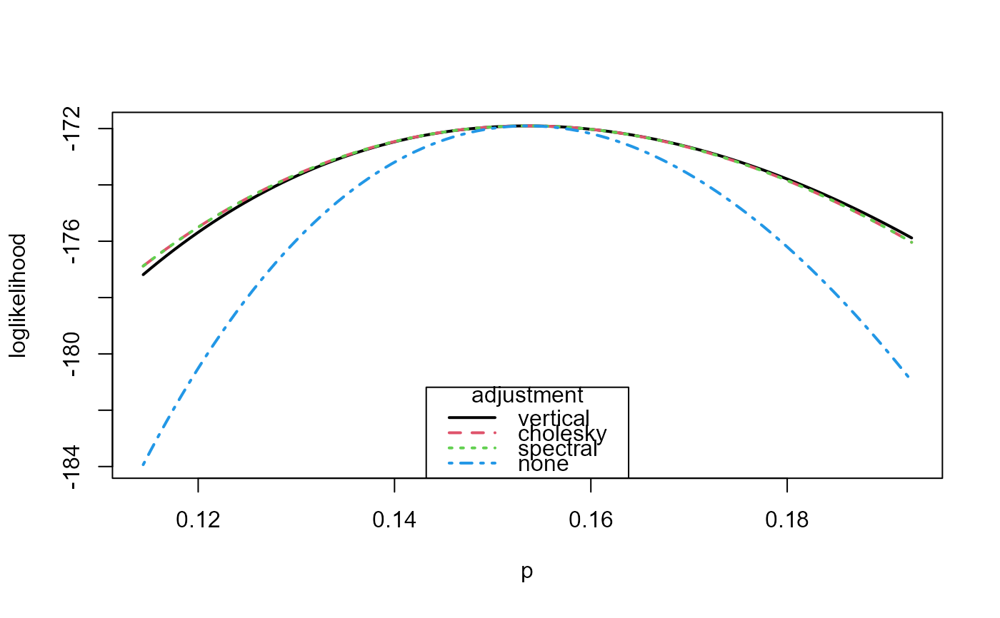

Performs adjustments of a user-supplied independence loglikelihood for the presence of cluster dependence, following Chandler and Bate (2007). The user provides a function that returns a vector of observation-specific loglikelihood contributions and a vector that indicates cluster membership. The loglikelihood of a sub-model can be adjusted by fixing a set of parameters at particular values.
adjust_loglik(
loglik = NULL,
...,
cluster = NULL,
p = NULL,
init = NULL,
par_names = NULL,
fixed_pars = NULL,
fixed_at = 0,
name = NULL,
larger = NULL,
alg_deriv = NULL,
alg_hess = NULL,
mle = NULL,
H = NULL,
V = NULL
)A named function. Returns a vector of the
loglikelihood contributions of individual observations. The first
argument must be the vector of model parameter(s). If any of the model
parameters are out-of-bounds then loglik should return either
-Inf or a vector with at least one element equal to -Inf.
The number of parameters in the full model must be specified
using (at least) one of the arguments p, init or
par_names.
Further arguments to be passed either to loglik
(and to alg_deriv and alg_hess if these are supplied) or
to optim. The latter may include gr,
method, lower, upper or control.
In the call to optim, hessian = TRUE
will be used regardless of any value supplied.
The function loglik must not have arguments with names
that match any of these arguments to optim.
A vector or factor indicating from which cluster the
respective loglikelihood contributions from loglik originate.
Must have the same length as the vector returned by loglik.
If cluster is not supplied then it is set inside
adjust_loglik under the assumption that each observation forms
its own cluster.
A numeric scalar. The dimension of the full parameter
vector, i.e. the number of parameters in the full model. Must be
consistent with the lengths of init and par_names,
if these are also supplied.
A numeric vector of initial values. Must have length equal
to the number of parameters in the full model. If init
is supplied then p is set to length(init), provided that
this is consistent with the the value given by p or implied
by length(par_names).
If fixed_pars is not NULL then init[-fixed_pars]
is used in the search for the MLE.
If init is not supplied then rep(0.1, p) is used.
A character vector. Names of the p parameters
in the full model. Must be consistent with the lengths of
init and p, if these are also supplied.
A vector specifying which parameters are to be restricted
to be equal to the value(s) in fixed_at. Can be either a numeric
vector, specifying indices of the components of the full parameter
vector, or a character vector of parameter names, which must be a subset
of those supplied in par_names or stored in the object
larger.
A numeric vector of length 1 or length(fixed_pars).
If length(fixed_at) = 1 then the components fixed_pars
of the parameter vector are all fixed at fixed_at.
If length(fixed_at) = length(fixed_pars) then the component
fixed_pars[i] is fixed at fixed_at[i] for each i.
A character scalar. A name for the model that gives rise
to loglik. If this is not supplied then the name in
larger is used, if this has been supplied, and the name of
the function loglik otherwise.
Only relevant if fixed_pars is not NULL.
If larger is supplied but fixed_pars is not then an error
will result. if larger is supplied then information about the
model in larger, e.g. about p and par_names will
override any attempt to set these arguments in the call to
adjust_loglik.
An object of class "chandwich" returned by adjust_loglik,
corresponding to a model in which the smaller model implied by
fixed_pars is nested. If larger is supplied then
all the arguments to adjust_loglik apart from
fixed_pars and fixed_at are extracted from larger.
If init is not supplied in the current call to
adjust_loglik then init is set to
attr(larger, "MLE"), with the elements in fixed_pars
set to fixed_at.
A function with the vector of model parameter(s) as its
first argument. Returns a length(cluster) by p numeric
matrix. Column i contains the derivatives of each of the loglikelihood
contributions in loglik with respect to model parameter i.
A function with the vector of model parameter(s) as its
first argument. Returns a p by p numeric matrix equal to
the Hessian of loglik, i.e. the matrix of second derivatives of
the function loglik.
Supplying both V and alg_deriv or both H and
alg_hess will produce an error.
A numeric vector. Can only be used if fixed_pars = NULL.
Provides the maximum likelihood estimate of the model parameters,
that is, the value of the parameter vector
at which the independence loglikelihood loglik is maximized.
Must have length equal to the number of parameters in the
full model. If mle is supplied then p is set
to length(mle), provided that this is consistent with the the
value given by p or implied by length(par_names).
If mle is supplied then it overrides init.
p by p numeric matrices. Only used if mle is supplied.
Provide estimates of the Hessian of the
independence loglikelihood (H) and the variance of the vector
of cluster-specific contributions to the score vector (first
derivatives with respect to the parameters) of the independence
loglikelihood, each evaluated at the MLE mle. See the
Introducing chandwich vignette and/or Chandler and Bate (2007).
Supplying both V and alg_deriv or both H and
alg_hess will produce an error.
A function of class "chandwich" to evaluate an adjusted
loglikelihood, or the independence loglikelihood, at one or more sets
of model parameters, with arguments
A numeric vector or matrix giving values of the p_current
(see below) parameters in the model to which the returned adjusted
loglikelihood applies.
If p_current = 1 this may be a numeric vector or a matrix
with 1 column.
If p_current > 1 this may be a numeric vector of length p
(one set of model parameters) or a numeric matrix with p
columns (nrow(x) sets of model parameters), one set in each row
of x.
A character scalar. The type of adjustment to use.
One of "vertical", "cholesky", "spectral" or
"none".
The latter results in the evaluation of the (unadjusted) independence loglikelihood. The function has (additional) attributes
The number of parameters in the full model and current models, respectively.
A numeric vector giving the indices of the free
parameters in the current model, with names inferred from
par_names if this was supplied.
Numeric vectors, with names inferred from
par_names if this was supplied. Maximum likelihood estimates
of free parameters under the current model (mle) and all
parameters in the full model, including any parameters with fixed
values (res_MLE).
The unadjusted and adjusted estimated standard errors, of the free parameters, respectively.
The unadjusted and adjusted estimated variance-covariance matrix of the free parameters, respectively.
The Hessians of the independence and adjusted loglikelihood, respectively.
The matrix C in equation (14) of Chandler and Bate (2007), calculated using Cholesky decomposition and spectral decomposition, respectively.
The names of the parameters in the full and current models, respectively, if these were supplied in this call or a previous call.
The common maximised value of the independence and adjusted loglikelihoods.
The arguments loglik and cluster
supplied in this call, or a previous call.
A list containing the further arguments passed to
loglik via ... in this call, or a previous call.
a vector containing the contributions of individual observations to the independence log-likelihood evaluated at the MLE.
The argument name, or the name of the function
loglik if name isn't supplied.
The number of observations.
The call to adjust_loglik.
If fixed_pars is not NULL then there are further attributes
The argument fixed_pars, with names inferred from
par_names if this was supplied.
The argument fixed_at, with names inferred from
par_names if this was supplied.
If alg_deriv and/or alg_hess were supplied then these are
returned as further attributes.
To view an individual attribute called att_name use
attr(x, "att_name") or attributes(x)$att_name.
Three adjustments to the independence loglikelihood described in
Chandler and Bate (2007) are available. The vertical adjustment is
described in Section 6 and two horizontal adjustments are described
in Sections 3.2 to 3.4. See the descriptions of type and, for the
horizontal adjustments, the descriptions of C_cholesky and
C_spectral, in Value.
The adjustments involve first and second derivatives of the loglikelihood
with respect to the model parameters. These are estimated using
jacobian and optimHess
unless alg_deriv and/or alg_hess are supplied.
Chandler, R. E. and Bate, S. (2007). Inference for clustered data using the independence loglikelihood. Biometrika, 94(1), 167-183. doi:10.1093/biomet/asm015
summary.chandwich for maximum likelihood estimates
and unadjusted and adjusted standard errors.
plot.chandwich for plots of one-dimensional adjusted
loglikelihoods.
confint.chandwich, anova.chandwich,
coef.chandwich, vcov.chandwich
and logLik.chandwich for other chandwich methods.
conf_intervals for confidence intervals for
individual parameters.
conf_region for a confidence region for
a pair of parameters.
compare_models to compare nested models using an
(adjusted) likelihood ratio test.
# ------------------------- Binomial model, rats data ----------------------
# Contributions to the independence loglikelihood
binom_loglik <- function(prob, data) {
if (prob < 0 || prob > 1) {
return(-Inf)
}
return(dbinom(data[, "y"], data[, "n"], prob, log = TRUE))
}
rat_res <- adjust_loglik(loglik = binom_loglik, data = rats, par_names = "p")
# Plot the loglikelihoods
plot(rat_res, type = 1:4, legend_pos = "bottom", lwd = 2, col = 1:4)
# MLE, SEs and adjusted SEs
summary(rat_res)
#> MLE SE adj. SE
#> p 0.1535 0.008645 0.01305
# -------------------------- GEV model, owtemps data -----------------------
# ------------ following Section 5.2 of Chandler and Bate (2007) -----------
# Contributions to the independence loglikelihood
gev_loglik <- function(pars, data) {
o_pars <- pars[c(1, 3, 5)] + pars[c(2, 4, 6)]
w_pars <- pars[c(1, 3, 5)] - pars[c(2, 4, 6)]
if (isTRUE(o_pars[2] <= 0 | w_pars[2] <= 0)) return(-Inf)
o_data <- data[, "Oxford"]
w_data <- data[, "Worthing"]
check <- 1 + o_pars[3] * (o_data - o_pars[1]) / o_pars[2]
if (isTRUE(any(check <= 0))) return(-Inf)
check <- 1 + w_pars[3] * (w_data - w_pars[1]) / w_pars[2]
if (isTRUE(any(check <= 0))) return(-Inf)
o_loglik <- log_gev(o_data, o_pars[1], o_pars[2], o_pars[3])
w_loglik <- log_gev(w_data, w_pars[1], w_pars[2], w_pars[3])
return(o_loglik + w_loglik)
}
# Initial estimates (method of moments for the Gumbel case)
sigma <- as.numeric(sqrt(6 * diag(var(owtemps))) / pi)
mu <- as.numeric(colMeans(owtemps) - 0.57722 * sigma)
init <- c(mean(mu), -diff(mu) / 2, mean(sigma), -diff(sigma) / 2, 0, 0)
# Loglikelihood adjustment for the full model
par_names <- c("mu[0]", "mu[1]", "sigma[0]", "sigma[1]", "xi[0]", "xi[1]")
large <- adjust_loglik(gev_loglik, data = owtemps, init = init,
par_names = par_names)
# Rows 1, 3 and 4 of Table 2 of Chandler and Bate (2007)
t(summary(large))
#> mu[0] mu[1] sigma[0] sigma[1] xi[0] xi[1]
#> MLE 81.1700 2.6680 3.7290 0.5312 -0.19890 -0.08835
#> SE 0.3282 0.3282 0.2293 0.2293 0.04937 0.04937
#> adj. SE 0.4036 0.2128 0.2426 0.1911 0.03943 0.03625
# Loglikelihood adjustment of some smaller models: xi[1] = 0 etc
# Starting from a larger model
medium <- adjust_loglik(larger = large, fixed_pars = "xi[1]")
small <- adjust_loglik(larger = large, fixed_pars = c("sigma[1]", "xi[1]"))
small <- adjust_loglik(larger = medium, fixed_pars = c("sigma[1]", "xi[1]"))
# Starting from scratch
medium <- adjust_loglik(gev_loglik, data = owtemps, init = init,
par_names = par_names, fixed_pars = "xi[1]")
small <- adjust_loglik(gev_loglik, data = owtemps, init = init,
par_names = par_names, fixed_pars = c("sigma[1]", "xi[1]"))
# --------- Misspecified Poisson model for negative binomial data ----------
# ... following Section 5.1 of the "Object-Oriented Computation of Sandwich
# Estimators" vignette of the sandwich package
# https://cran.r-project.org/web/packages/sandwich/vignettes/sandwich-OOP.pdf
# Simulate data
set.seed(123)
x <- rnorm(250)
y <- rnbinom(250, mu = exp(1 + x), size = 1)
# Fit misspecified Poisson model
fm_pois <- glm(y ~ x + I(x^2), family = poisson)
summary(fm_pois)$coefficients
#> Estimate Std. Error z value Pr(>|z|)
#> (Intercept) 1.06326821 0.04135723 25.709367 9.184267e-146
#> x 0.99607219 0.05353446 18.606186 2.862861e-77
#> I(x^2) -0.04912373 0.02314608 -2.122335 3.380961e-02
# Contributions to the independence loglikelihood
pois_glm_loglik <- function(pars, y, x) {
log_mu <- pars[1] + pars[2] * x + pars[3] * x ^ 2
return(dpois(y, lambda = exp(log_mu), log = TRUE))
}
pars <- c("alpha", "beta", "gamma")
pois_quad <- adjust_loglik(pois_glm_loglik, y = y, x = x, par_names = pars)
summary(pois_quad)
#> MLE SE adj. SE
#> alpha 1.06300 0.04136 0.08378
#> beta 0.99610 0.05354 0.10520
#> gamma -0.04913 0.02315 0.03628
# Providing algebraic derivatives and Hessian
pois_alg_deriv <- function(pars, y, x) {
mu <- exp(pars[1] + pars[2] * x + pars[3] * x ^ 2)
return(cbind(y - mu, x * (y - mu), x ^2 * (y - mu)))
}
pois_alg_hess <- function(pars, y, x) {
mu <- exp(pars[1] + pars[2] * x + pars[3] * x ^ 2)
alg_hess <- matrix(0, 3, 3)
alg_hess[1, ] <- -c(sum(mu), sum(x * mu), sum(x ^ 2 * mu))
alg_hess[2, ] <- -c(sum(x * mu), sum(x ^ 2 * mu), sum(x ^ 3 * mu))
alg_hess[3, ] <- -c(sum(x ^ 2 * mu), sum(x ^ 3 * mu), sum(x ^ 4 * mu))
return(alg_hess)
}
pois_quad <- adjust_loglik(pois_glm_loglik, y = y, x = x, p = 3,
alg_deriv = pois_alg_deriv, alg_hess = pois_alg_hess)
summary(pois_quad)
#> MLE SE adj. SE
#> 1 1.06300 0.04136 0.08378
#> 2 0.99610 0.05354 0.10520
#> 3 -0.04913 0.02315 0.03628
got_sandwich <- requireNamespace("sandwich", quietly = TRUE)

if (got_sandwich) {
# Providing MLE, H and V
# H and V calculated using bread() and meat() from sandwich package
n_obs <- stats::nobs(fm_pois)
pois_quad <- adjust_loglik(pois_glm_loglik, y = y, x = x, p = 3,
mle = fm_pois$coefficients,
H = -solve(sandwich::bread(fm_pois) / n_obs),
V = sandwich::meat(fm_pois) * n_obs)
}